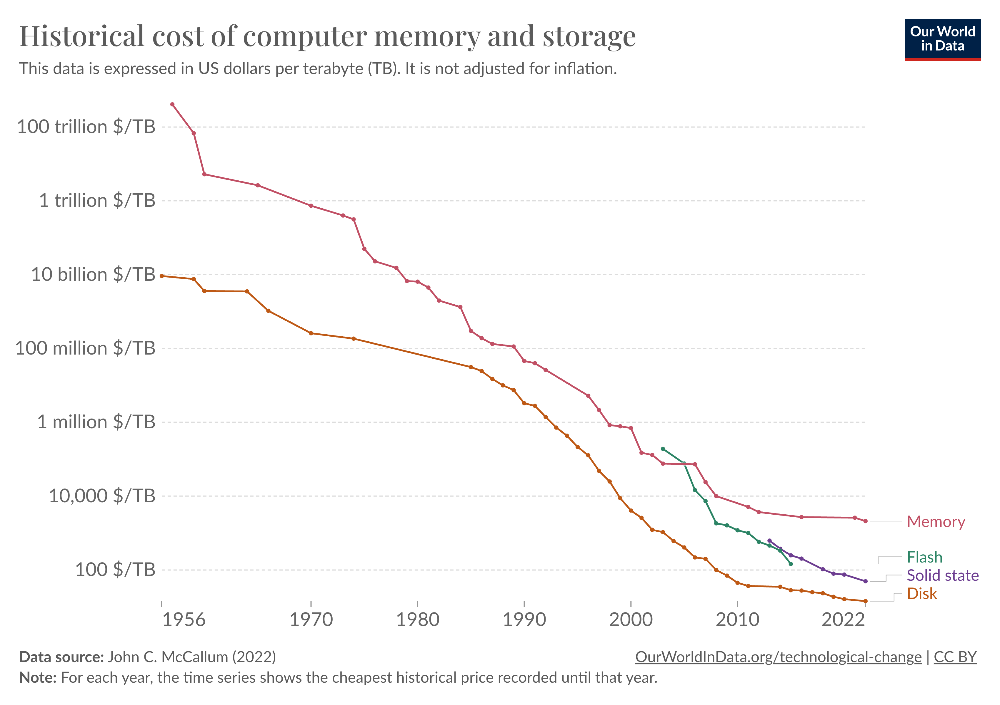
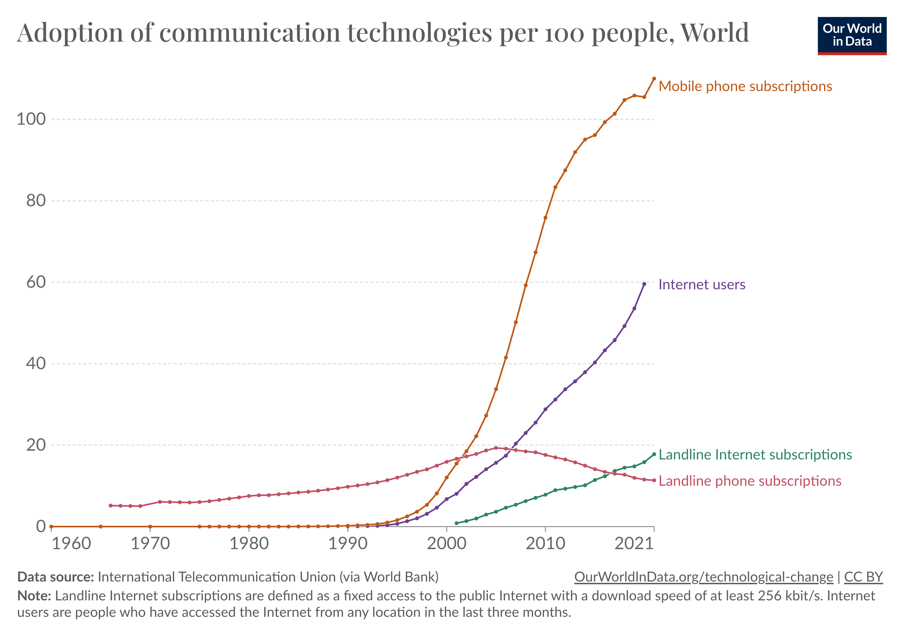

Defining Computational Social Science
Advances in computing have facilitated two trends:
- Computers are getting smaller and cheaper.
- Computing is becoming more ubiquitous.


The effects of these trends are visible on the social sciences. For example, advances in processing power and computational algorithms have enabled new approaches to statistics which rely on Bayesian inference (Fienberg 2006, 24). From a more human-centered perspective, interactive computational technologies enable new forms of collaboration between scientists, though not necessarily an increase in productivity (Goldstein 2023).
At the same time, the ubiquity of computation continues to produce rich datasets with great potential for social science analysis (King 2011). Further, the new communication methods have become areas of study in and of themselves (boyd and Ellison 2007).
In response to these trends, some scientists view computational social science as an emerging field in its own right. D. Lazer et al. (2009) presents a vision for the field as one which should not be captured by large companies or researchers with privileged access to data, but rather one based on open science. In their view, the ubiquity of data collection combined with the computational resource to analyze offers opportunities to enrich social science research; however, this new paradigm brings new methodological challenges in addition to issues related to data access and privacy (D. Lazer et al. 2009, 722).
This paper coincided with the “Web 2.0” era of the internet, which relied upon services creating a virtuous cycle by providing data to then be consumed and reused (O’Reilly, Tim 2005). More than a decade later, a retrospective of the extent to which the vision laid out in D. Lazer et al. (2009) has been achieved remains mixed. Scientists have used these paradigms to do some very interesting research, which we will discuss throughout this course, yet many of the challenges remain and the full vision remains unrealized in many ways.
In a follow up article, D. M. J. Lazer et al. (2020)